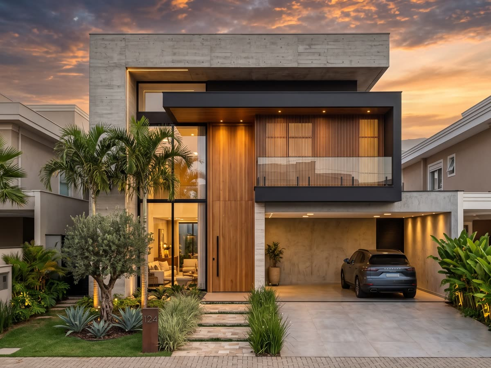
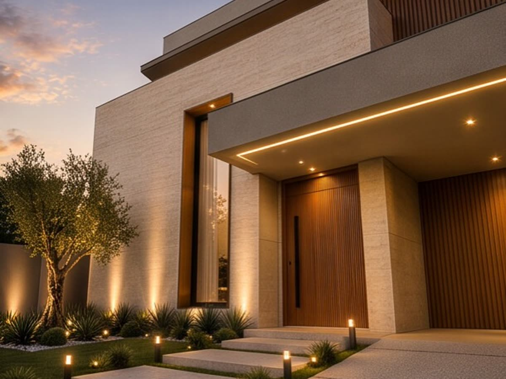
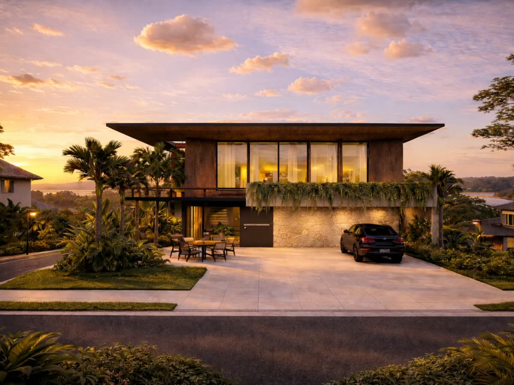
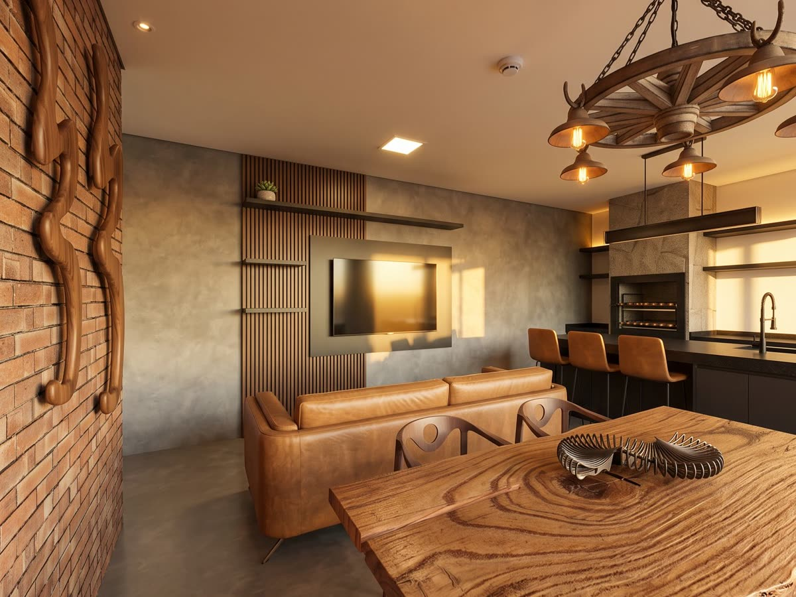
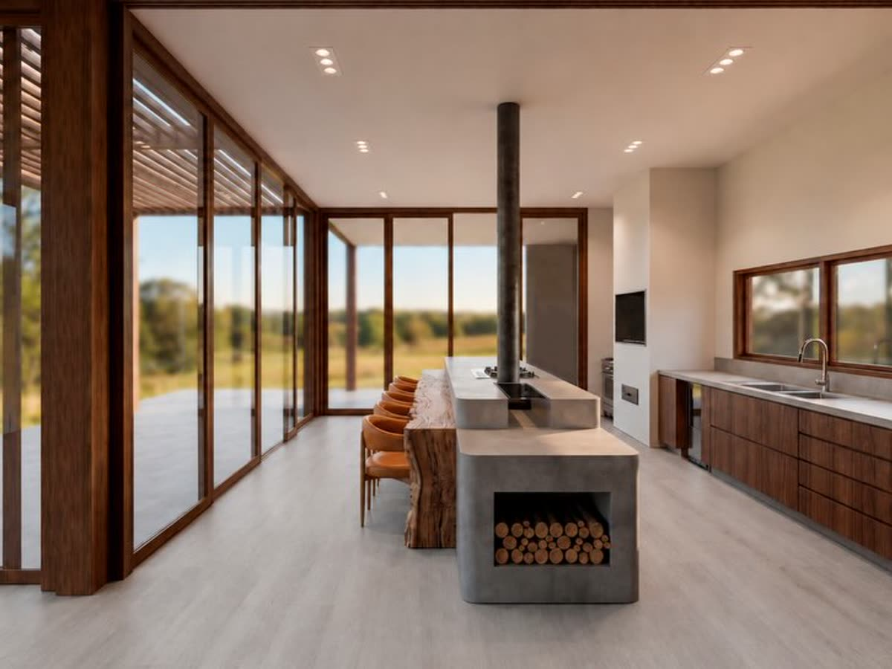
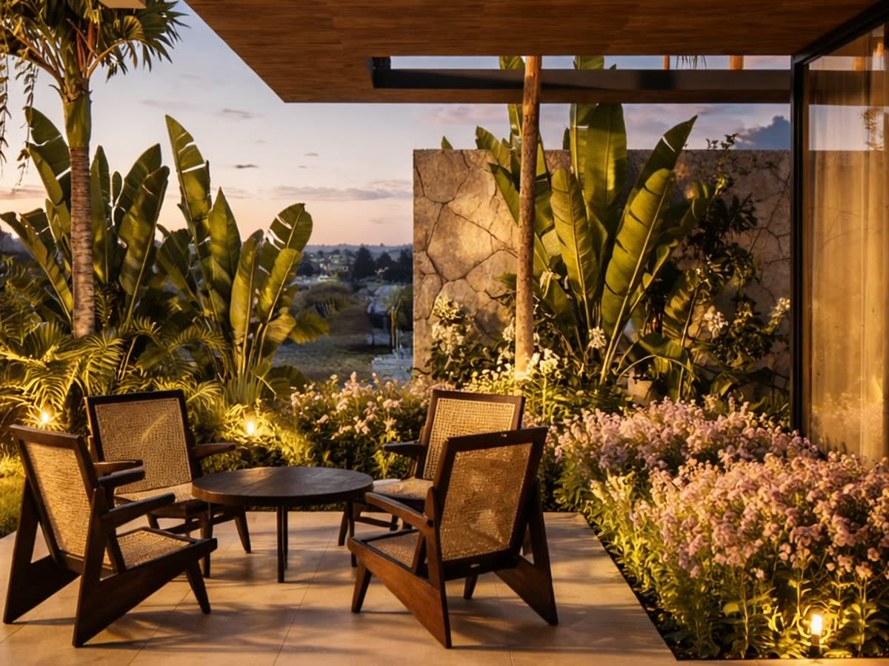
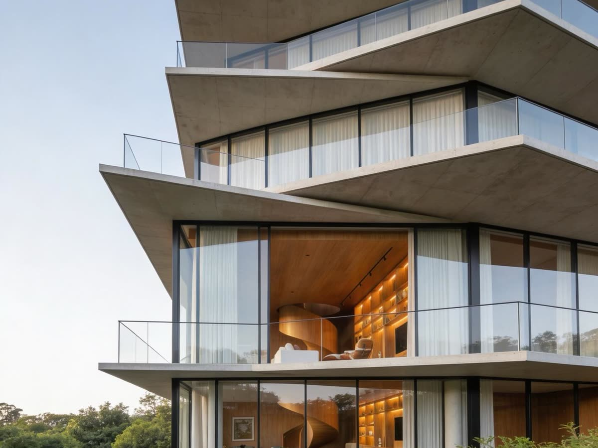
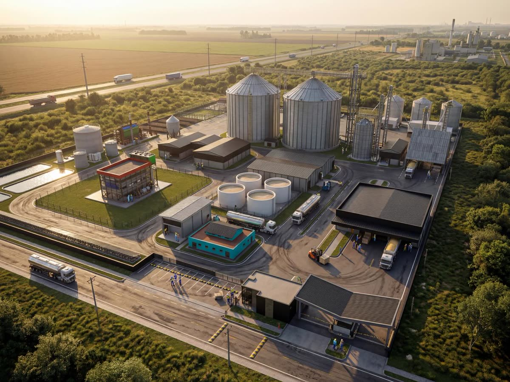
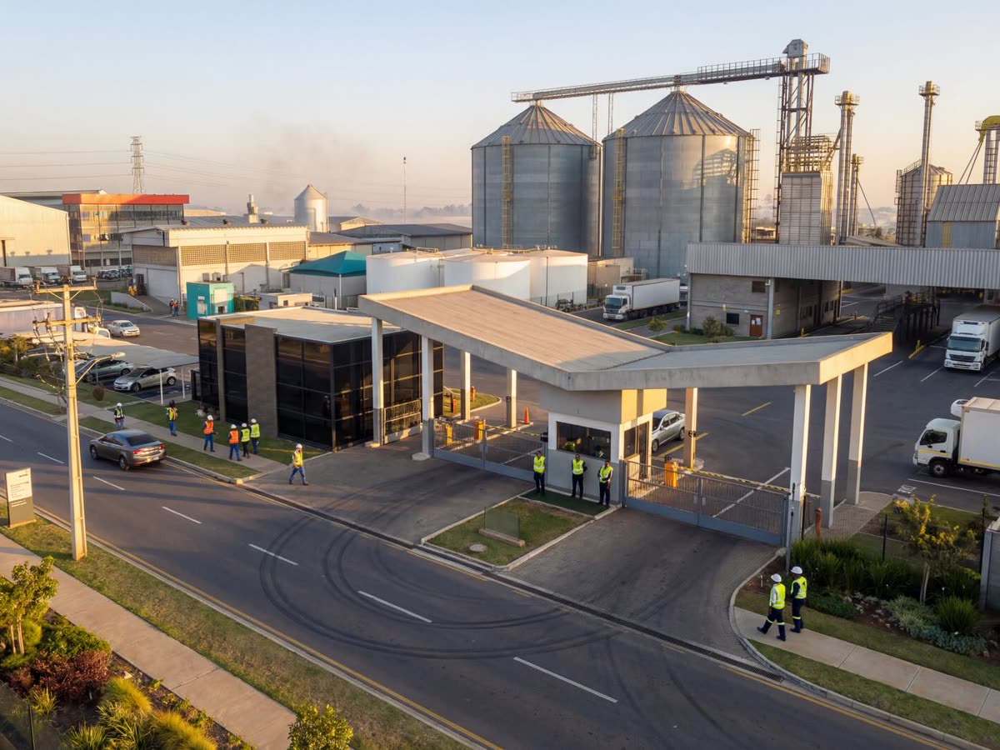

A obra que nunca acaba
Prazo prometido de 8 meses que vira 2 anos. Sem cronograma físico-financeiro real, cada semana perdida vira aluguel pago em dobro.
CREA-MS · Atuação em Campo Grande
Da aprovação de crédito FCO e Habite-se até a construção residencial, comercial ou industrial. A MP Engenharia e Projetos transforma seu investimento em uma obra sólida, sem dor de cabeça e rigorosamente planejada.
01 · Por que tanta gente sofre para construir
Se você já ouviu de alguém — ou já viveu — alguma das situações abaixo, saiba que nenhuma delas é normal. Todas têm origem na mesma causa: obra iniciada sem projeto completo e sem engenheiro presente.
Prazo prometido de 8 meses que vira 2 anos. Sem cronograma físico-financeiro real, cada semana perdida vira aluguel pago em dobro.
Começa com um valor no papel e termina 40% acima. Sem quantitativo detalhado, o improviso no canteiro é pago com o seu dinheiro.
Projeto reprovado na prefeitura, Habite-se negado, financiamento parado. Documentação errada custa meses de atraso.
Ninguém responde, o mestre decide sozinho e você descobre o erro quando a parede já está levantada. Falta responsável técnico no local.
A MP Engenharia e Projetos existe para inverter essa lógica. Projeto completo antes da primeira escavação, orçamento fechado com quantitativo, burocracia resolvida por quem conhece os trâmites de Campo Grande e engenheiro no canteiro do início ao fim.
02 · Nossos serviços
Você não precisa contratar um escritório para o projeto, outro para os complementares, um despachante para a papelada e uma equipe para executar. Aqui, o processo inteiro acontece sob o mesmo CREA.
Estudo preliminar, projeto arquitetônico completo, plantas legais e aprovação na prefeitura. Um desenho que respeita seu terreno, seu orçamento e o seu jeito de morar.
Estrutural, elétrico e hidrossanitário desenvolvidos de forma compatibilizada — para que nenhuma viga bata em tubulação e nenhum quadro fique no lugar errado.
Execução completa da sua casa, sobrado, ampliação ou edícula. Da fundação ao acabamento, com equipe própria coordenada e medições transparentes.
Obras comerciais pensadas para operar: fluxo de clientes, acessibilidade, prazo de inauguração e aprovação no Corpo de Bombeiros sem retrabalho.
Galpões, barracões e ampliações industriais com estrutura dimensionada para carga real de operação, logística interna e crescimento futuro da planta.
A inteligência burocrática e financeira da obra. Regularizamos o que está irregular, emitimos o Habite-se e montamos o dossiê técnico exigido para o crédito FCO.
Não sabe por qual serviço começar? Descreva seu caso em uma mensagem — respondemos com o próximo passo.
Quero uma orientação técnica03 · Quem assina a sua obra
A MP Engenharia e Projetos nasceu em Campo Grande da inconformidade de dois engenheiros civis com o padrão que viam no mercado: projetos entregues por e-mail e nunca mais revisitados, obras tocadas sem responsável técnico presente e clientes descobrindo problemas tarde demais.
Decidimos construir o oposto disso. Um escritório que desenha, aprova, orça, executa e entrega — assinando cada etapa com o próprio CREA e estando fisicamente no canteiro para responder por cada decisão tomada.
Hoje atendemos famílias que constroem a primeira casa, empresários que abrem lojas e indústrias que ampliam sua planta em Campo Grande e região. Muda a escala, não muda o cuidado.
Conversar com os responsáveis técnicosEngenheiro Civil · Responsável Técnico
CREA 67721-MS
Engenheiro Civil · Responsável Técnico
CREA 70662-MS
Registro ativo no CREA-MS. Toda obra executada pela MP recebe ART (Anotação de Responsabilidade Técnica) — o documento que garante, por lei, que existe um engenheiro respondendo pelo seu imóvel.
04 · Nossos diferenciais
O principal
Nossos engenheiros estão no canteiro de obras — não apenas no papel. Visitas técnicas regulares, conferência de execução contra o projeto, correção de rumo antes que o erro vire concreto curado e um canal direto no WhatsApp com quem realmente decide.
Você fala com o engenheiro. Não com um intermediário.
Cada item levantado a partir do projeto executivo. Você sabe o que está pagando, por quê, e o que acontece se decidir mudar algo no meio do caminho.
Planejamento físico-financeiro com etapas, medições e prazos definidos antes do primeiro dia de obra — e revisado a cada visita técnica.
Prefeitura, Bombeiros, concessionárias, cartório, Habite-se e dossiê de FCO. Conhecemos os trâmites de Campo Grande e cuidamos deles por você.
Projeto, complementares, aprovação e execução sob o mesmo CREA. Sem terceirização de culpa quando algo precisa ser resolvido.
05 · Como trabalhamos
Nenhuma fase começa antes da anterior estar aprovada por você. É assim que se evita retrabalho — e é assim que o orçamento para de crescer no meio da obra.
Entendemos o terreno, a necessidade real, o prazo desejado e o teto de investimento. Saímos daqui com um escopo claro e uma proposta técnica — sem promessa que não cabe no seu orçamento.
Arquitetônico, complementares e compatibilização. Em paralelo, cuidamos da documentação: alvará, Habite-se e o dossiê técnico exigido pelo banco quando a obra envolve crédito FCO.
Quantitativo, orçamento detalhado e cronograma físico-financeiro. Você aprova valores e prazos por escrito antes que qualquer material seja comprado.
Obra tocada com equipe coordenada, visitas técnicas dos engenheiros, relatórios de andamento e medições transparentes. Você acompanha cada etapa em tempo real pelo WhatsApp.
Vistoria final item a item, correção de pendências, documentação regularizada e manual do proprietário. A obra só é entregue quando está pronta de verdade.
A entrega
Todas as etapas anteriores existem para chegar até aqui: a obra concluída, regularizada e entregue no prazo que combinamos — com a documentação em ordem e um engenheiro que continua disponível depois da entrega.
Começar meu projeto06 · Projetos e obras
Você aprova o projeto vendo exatamente como ele vai ficar. Depois, acompanha a obra tomando a forma do desenho.









07 · O que dizem nossos clientes
Nada de depoimento inventado. Abaixo estão comentários de clientes que contrataram projetos e obras com a MP Engenharia e Projetos em Campo Grande.
Quero deixar meu enorme reconhecimento à MP Engenharia e Projetos. O trabalho que eles realizam é simplesmente excepcional: com muita ética, profissionalismo e atenção a cada detalhe. Recomendo fortemente a MP como uma referência no mercado de engenharia. Se você busca um parceiro de confiança, essa é a escolha certa!
Empresa extremamente profissional. Equipe competente, organizada e comprometida com a qualidade dos projetos. Dá pra ver que trabalham com seriedade e atenção aos detalhes. Recomendo!
Empresa séria, funcionários competentes e extremamente prestativos, valeu a pena o valor investido.
Excelente empresa! Tive uma ótima experiência com a equipe. São extremamente profissionais, organizados e comprometidos com prazos e qualidade.
Empresa muito séria, com ideais e transparência. Super indico a MP para projetos e serviços de Engenharia
Recomendo de olhos fechados, sem duvidas o melhor da cidade! Muito antenciosos, e com os melhores projetos
Excelente atendimento. Tem cordialidade e entendimento do assunto ao responder nossas dúvidas. Super recomendo
Excelentes profissionais, muito atenciosos! O projeto ficou incrível! Recomendo demais
Excelentes profissionais, atenciosos e competentes!! recomendo de olhos fechados
Melhor lugar de Campo Grande, rapaziada muito atenciosa e gente fina. Deus abençoe vocês, gurizada.
Uma empresa séria, competente e que entrega exatamente o que promete. O cuidado com cada etapa, a responsabilidade técnica e o compromisso com o cliente são diferenciais claros. É muito bom poder confiar em profissionais que realmente entendem do que fazem. Recomendo sem hesitar!
Profissional extremamente competente, dedicado e muito correto em tudo que faz. Desde o primeiro contato demonstrou conhecimento técnico, organização e compromisso com a qualidade do serviço. Valeu Pedro
Empresa de engenharia e projetos que se destaca pela excelência, comprometimento e soluções inteligentes. Atendimento profissional, planejamento bem estruturado e execução de alta qualidade, sempre respeitando prazos e necessidades.
Uma empresa séria, que transmite confiança e profissionalismo em cada etapa. Destaco a organização, o cuidado com os detalhes e a excelência na execução. Experiência extremamente positiva.
Empresa responsável, atendimento de qualidade. Atende tanto o cliente quanto os funcionários de uma forma profissional. Super indico
Escritório de excelência e muito bom gosto, faria mais projetos com toda certeza, arquiteta super atenciosa.
Incrível, atendimento impecável! O Pedro é muito atencioso e atendeu todas minhas expectativas.
Profissionais capacitados e bem empenhados, entregando o serviço com excelência e bom atendimento!
Profissionais de excelência, bom atendimento e muito bem atualizados em tecnologia!!!
Empresa de confiança, projetos excelentes e profissionais capacitados!
Passe o mouse sobre um depoimento para pausar
Ver todas as avaliações no Google08 · Perguntas frequentes
Sim. Preparamos toda a documentação técnica que o banco exige para liberar o crédito FCO: projeto aprovado, memorial descritivo, orçamento detalhado e cronograma físico-financeiro nos moldes solicitados pela instituição. A aprovação final é do banco, mas a parte técnica sai daqui pronta e no formato correto — o que evita a causa mais comum de devolução do processo.
A frequência é definida em contrato conforme o porte e a fase da obra — etapas críticas como fundação, estrutura e instalações recebem acompanhamento mais próximo. Em todos os casos existe um engenheiro responsável designado, com canal direto no WhatsApp, e você recebe registros do andamento. Acompanhamento de perto é o nosso diferencial, não um item opcional.
Trabalhamos com pacotes. É possível contratar apenas o arquitetônico, mas recomendamos fortemente o pacote completo com estrutural, elétrico e hidrossanitário compatibilizados. Projetos feitos por profissionais diferentes e sem compatibilização são a origem de boa parte dos improvisos e custos extras que aparecem no canteiro. Na proposta, você recebe o valor de cada item separadamente.
Pode. Muitos clientes contratam apenas projeto e aprovação e executam com equipe própria. Nesse caso, também oferecemos o serviço de acompanhamento técnico da obra de terceiros, para garantir que o que foi desenhado está sendo executado corretamente.
Nossa base é Campo Grande - MS e é onde atuamos com maior frequência, inclusive na região metropolitana. Para cidades do interior do estado, avaliamos caso a caso considerando o porte da obra e a logística do acompanhamento técnico. Mande uma mensagem com a localização e respondemos com a viabilidade.
Na maioria dos casos, sim. Fazemos o levantamento do que foi construído, elaboramos o projeto de regularização, providenciamos a ART e conduzimos o processo junto à prefeitura até a emissão do Habite-se. Imóvel regularizado é o que permite financiar, vender e averbar em cartório sem travas.
Sua dúvida não está aqui?
Perguntar no WhatsAppPróximo passo
Atendimento direto com engenheiro civil. Sem robô, sem formulário longo, sem compromisso de contratação.
Falar com um engenheiro agora